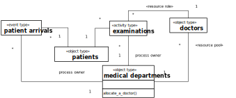
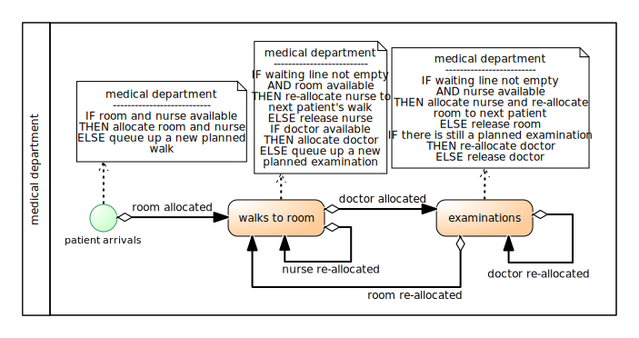

As our first example, we consider a basic model of a medical
department of a hospital with just one type of activity, medical
examinations, and one type of resource, doctors. In our second
example this model is extended by adding two other resource types,
examination rooms and nurses, and another type of
activity: walks to rooms (the walks of patients to examination
rooms guided by nurses).
A basic conceptual model
In
our basic model of a medical department we consider just one activity,
medical examinations, and one type of resource,
doctors:
Patients arrive at a medical department at random times.
If there are no other planned examinations waiting for the
availability of a doctor, and a doctor is available, any newly arrived
patient is immediately examined by that doctor. Otherwise, the planned
examination of the newly arrived patient is added to a list of planned
examinations (representing a queue).
The duration of examinations varies, depending on the individual
case.
When an examination by a doctor is completed, the next planned
examination is started by the doctor, if there is still any planned
examination in the queue.
The potentially relevant object types of the system under
investigation are:
patients,
medical departments,
doctors.
The potentially relevant event types are:
patient arrivals,
examination starts,
examination ends,
Instead of considering the event types examination starts
and examination ends, we can consider the activity type
examinations. Thus, we get the following conceptual information
model (expressed as an OE Class Diagram,
which is a special type of UML class diagram):

From the diagram we can infer that:
For patient arrivals and for examinations, there
is an association with medical departments providing the
process owner, such that for any patient arrival event
and examination activity a specific medical department
is in charge of handling the event or seeing to it that the activity is
going to be performed.
While patient arrivals have two participants: a
patient and a medical department,
examinations have three participants: a patient, a
medical department and a doctor.
Examinations have one resource role, doctor, with
a resource cardinality constraint of exactly one, which means that
exactly one doctor is required for performing an
examination.
The process owner of an examination, a medical
department, has a resource pool for doctors. The
doctors needed for performing examinations at this
department are allocated from this pool, and the department, as the
process owner of examinations, has a business procedure for
allocating doctors to planned examinations (using
certain policies).
In addition to a conceptual information model, which captures the
system's state structure, we also need to make a conceptual process model
that captures the dynamics of the system. A process model can be expressed
with the help of event rules, which define what happens when an
event (of a certain type) occurs, or, more specifically, which state
changes and which follow-up events are caused by an event of
that type.
The following conceptual process model (in the form of a
DPMN Process Diagram) is based on the information model above. It refers to
a medical department as the process owner, visualized in the form
of a container rectangle (called "Pool" in BPMN, but not in DPMN), and to
doctor objects, as well as to the event type patient arrivals
and to the activity type examinations.
This conceptual
process model describes two causal regularities in the form of the following
two event rules, each stated with two bullet points: one for describing the
state changes and one for describing the follow-up events brought about by
applying the rule.
When a new patient arrives:
if a doctor is available, then she is allocated to the
examination of that patient; otherwise, a new planned examination is
queued up;
if a doctor has been allocated, then start an examination of the
patient.
When an examination is completed by a doctor:
if the queue of planned examinations is empty, then the doctor
is released;
otherwise, the next planned examination by that doctor starts
immediately.
We can simplify the model by using a Resource-Dependent
Activity Start arrow between the patient arrivals event type
circle and the examinations activity type rectangle, as shown in
the following DPMN process diagram:
An extended conceptual model
For being more realistic, we consider the fact that patients first
need to be walked by nurses to the room allocated to their examination
before the examination can start. So, in our extended model of a medical
department we consider two other resource types, examination rooms
and nurses, and another type of activity: walks to rooms
(the walks of patients to examination rooms guided by nurses):
Patients arrive at a medical department at random times.
When a new patient arrives, and an examination room and a nurse are
available, that nurse walks the patient to that room, otherwise the
patient has to wait for the availability of an examination room and a
nurse (administratively, a new planned walk is added to the queue/list
of planned walks).
When a nurse has walked a patient to a room and a doctor is
available, an examination of the patient by that doctor in the room
starts; otherwise the patient has to wait for the availability of a
doctor (administratively, a new planned examination is placed in the
queue/list of planned examinations).
When an examination of a patient by a doctor in a room is
completed,
if there is still another planned examination of a patient
waiting in a room for the availability of a doctor, the doctor goes
to that room and starts the examination of that patient; otherwise,
the planned examination of the newly arrived patient is added to a
list of planned examinations (representing a queue);
if there is still another planned walk of a patient to a room
waiting for the availability of a room, the room is allocated to
this planned walk; if a nurse is available, she walks the patient to
that room.
The duration of walks and examinations varies, depending on the
individual case.
The potentially relevant object types of the system under
investigation are: patients, medical departments,
rooms, nurses and doctors.
The potentially
relevant event types are patient arrivals and the activity
types walks to rooms and examinations.
Thus, we get
the following conceptual information model expressed as an OE class diagram:
Notice that in
this model, (a) the performer role is explicitly marked with «performer»: a
nurse is a performer of walks to room while a
doctor is a performer of examinations, and (b) the
stereotypes «resource role» and «resource pool» have been abbreviated by
«rr» and «rp».
From the diagram we can infer that:
For the event type patient arrivals and for the activity
types walks to rooms and examinations, there is an
association with medical departments providing the process
owner.
While patient arrivals have two participants: a
patient and a medical department, walks and
examinations have four participants: a medical
department, a patient, a nurse or a
doctor, and a room.
Walks have two resource roles, nurse and
room, both with a resource cardinality constraint of exactly
one, which means that exactly one nurse and one room
are required for performing a walk.
Examinations have two resource roles, doctor and
room, both with a resource cardinality constraint of exactly
one.
The process owner of a walk to a room and a subsequent
examination, a medical department, has three resource
pools for nurses, rooms and doctors. All
required resources needed for performing walks to room and
examinations at this department are allocated from these pools,
and the department has corresponding business procedures for allocating
rooms, nurses and doctors using certain allocation policies.
In addition to a conceptual information model, which captures the
system's state structure, we also need to make a conceptual process model
that captures the dynamics of the system. A process model can be expressed
with the help of event rules, which define what happens when an event (of a
certain type) occurs, or, more specifically, which state changes and which
follow-up events are caused by an event of that type.
The following
conceptual process model (in the form of a DPMN Process Diagram) is based on
the information model above. It refers to the object types medical
departments and doctors, as well as to the event type patient
arrivals and to the activity type
examinations.

This process
model describes three causal regularities in the form of the following three
event rules:
When a new patient arrives:
if a room and a nurse are available, they are allocated to the
walk of that patient to that room, otherwise a new planned walk is
placed in the corresponding queue;
if a room has been allocated, then the nurse starts walking the
patient to the room.
When a walk of a patient and nurse to a room is completed:
if there is still a planned walk in the queue and a room is
available, then the room is allocated and the nurse is re-allocated
to the walk of the next patient to that room; if a doctor is
available, she is allocated to the examination of that patient, else
a new planned examination of that patient is queued up;
if a doctor has been allocated, then the examination of the
patient starts; if the nurse has been re-allocated, she starts
walking the next patient to the allocated room.
When an examination of a patient is completed by a doctor in a
particular room:
if there is still a planned examination (of another patient in
another room), the doctor is re-allocated to that planned
examination, else the doctor is released; if the waiting line
is not empty, the room is re-allocated to the next patient, else it
is released;
if the doctor has been re-allocated to a planned examination,
that examination starts; if the room has been re-allocated to
another patient and a nurse is available, that nurse starts walking
the patient to the room.
Again, we can simplify the model by using Resource-Dependent
Activity Start arrows resulting in an Activity Network model, as
shown in the following DPMN process diagram:
We can display
the two performer roles doctor and nurse with the help of
two corresponding swimlanes shown within the process owner
rectangle:
Notice that the use of swimlanes (marking
disjoint subrectangles) is a convenient visual syntax for displaying the
performer roles when the different performers have a non-overlapping set of
activity types. However, when activities of a certain type are performed
jointly by more than one performer (e.g., when a doctor and a nurse jointly
perform an examination), a different visual syntax needs to be
introduced.